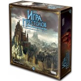

<mat-card class="mat-elevation-z4 game-card">
  <div class="card-nav">
    
  </div>

  <div class="game-content">
    <mat-card-content>
      <a [routerLink]="['/disciplines', game.id]">
        <mat-card-title>{{ game.title | slice: 0:20 }}</mat-card-title>
      </a>

      <mat-card-subtitle>Сыграно партий: 1</mat-card-subtitle>
      <bar-rating [(rate)]="rate" [max]="5" [readOnly]="true"></bar-rating>
      <span class="players-number">
        <mat-icon>people_alt</mat-icon>
        {{ game.minPlayers }} - {{ game.maxPlayers }}
      </span>
    </mat-card-content>
  </div>

  <div class="menu-opener">
    <button mat-icon-button [mat-menu-trigger-for]="menu">
      <mat-icon>more_vert</mat-icon>
    </button>
    <mat-menu #menu="matMenu">
      <button *ngIf="false" mat-menu-item (click)="delete()">
        <mat-icon>delete</mat-icon><span>Удалить</span>
      </button>
      <button mat-menu-item (click)="edit()">
        <mat-icon>edit</mat-icon><span>Редактировать</span>
      </button>
    </mat-menu>
  </div>
</mat-card>
